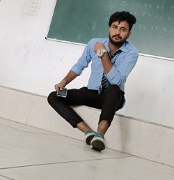

|  | kulbushan singhComputer science engineering my cv Contact no. :- 9682151583 gmail :- kannurajput1515@gmail.com Carreer objectiveTo work in an innovative and challenging environment that can enhance and improve my skills, knowledge and provide an opportunity to grow with the company while faithfully rendering the services with utmost sincerity and dedication. |
10th - 61%
completed in 2015
12th - 59%
completed in 2018
71%
completed in 2024
| Programming Languages | C++, HTML, CSS, Javascript. Python |
| Computer Software | Microsoft Office. | opreating System | Microsoft Window 11, LINUX (Ubuntu). |
I vouch the authenticity of the above-mentioned information. Give me an opportunity, I promise to put my sincere efforts to rise to your expectations and become an asset to your esteemed organization.